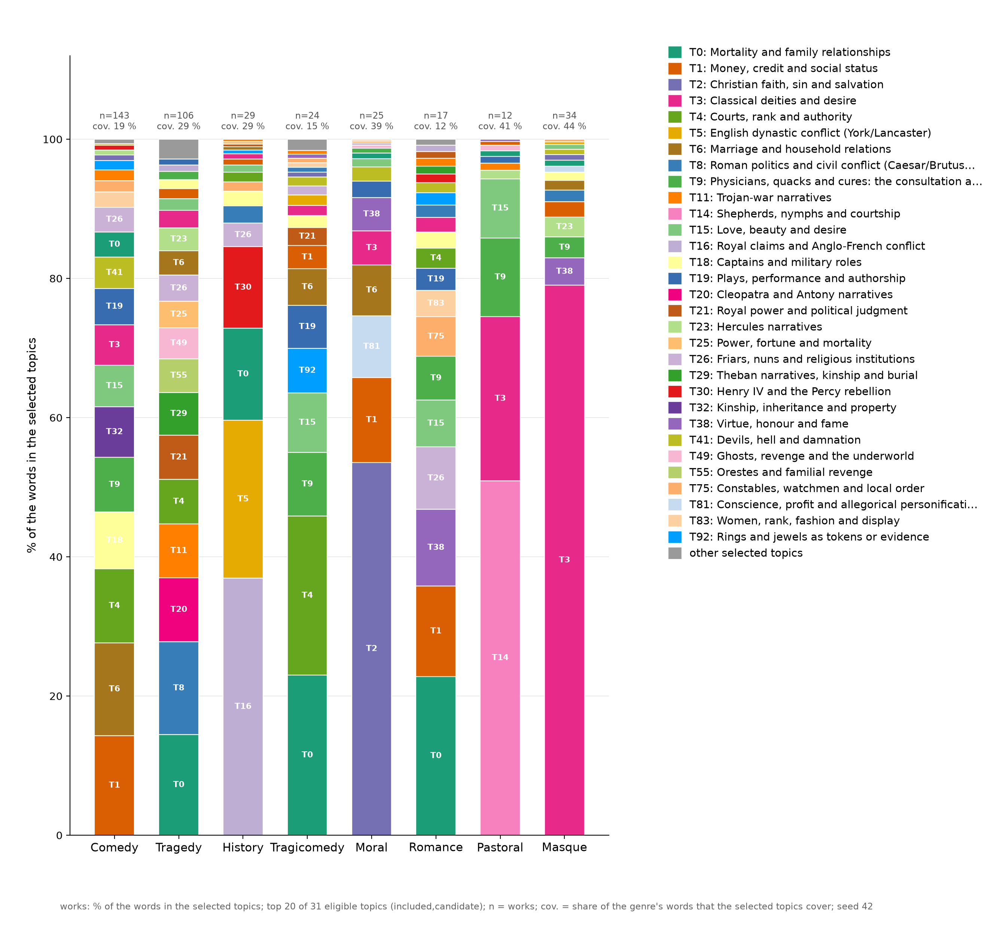
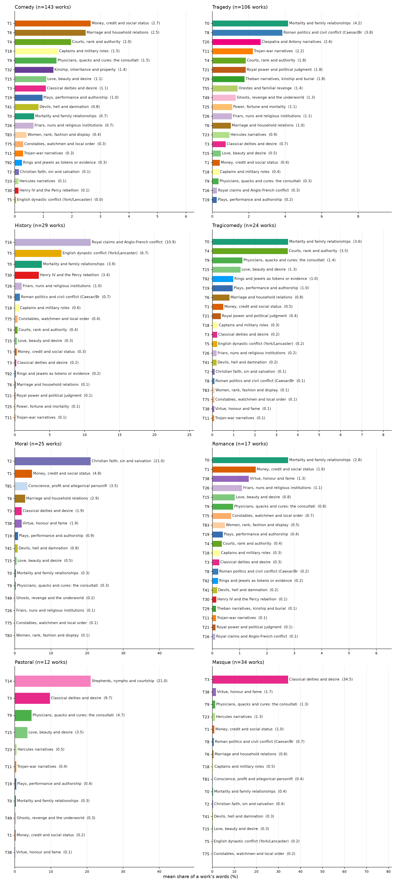
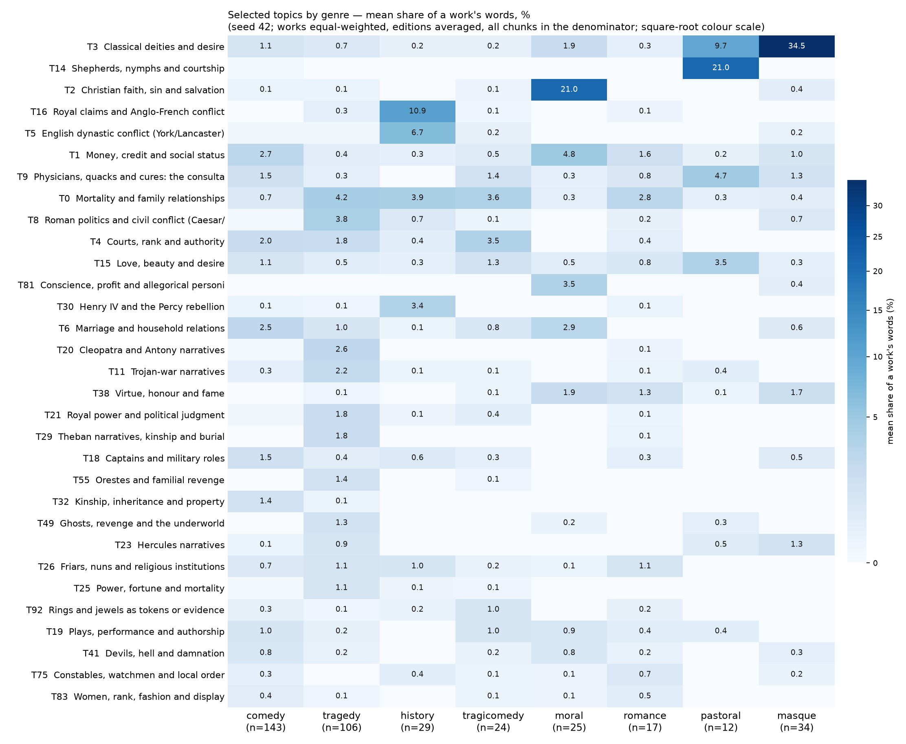
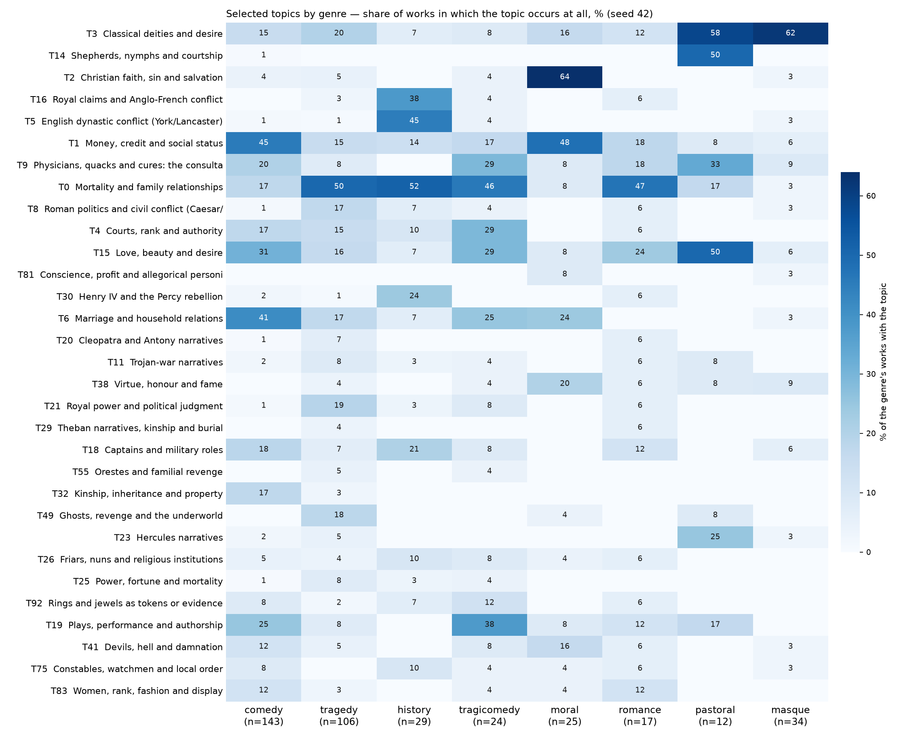

Shares are of a work's words: chunks are aggregated to editions, editions of one work are averaged, and works enter their genre with equal weight. Every chunk stays in the denominator, so the selected topics never describe a whole genre — the rest of each genre's words is shown alongside.
| genre | works | selected topics | single work / story | pending | unassigned |
|---|---|---|---|---|---|
| comedy | 143 | 19 % | 17 % | 9 % | 56 % |
| tragedy | 106 | 29 % | 19 % | 5 % | 47 % |
| history | 29 | 29 % | 6 % | 3 % | 61 % |
| tragicomedy | 24 | 15 % | 17 % | 12 % | 56 % |
| moral | 25 | 39 % | 1 % | 2 % | 58 % |
| romance | 17 | 12 % | 16 % | 6 % | 66 % |
| pastoral | 12 | 41 % | 4 % | 2 % | 52 % |
| masque | 34 | 44 % | 0 % | 0 % | 56 % |
| other/multi | 126 | 29 % | 5 % | 2 % | 65 % |


Per-genre bar charts: comedy · history · masque · moral · pastoral · romance · tragedy · tragicomedy


Click any figure to open it at full size.
"one-work" = a single work holds ≥50 % of the highest genre's total share, so that mean is one play, not the genre. Descriptive only.
| topic | highest genre (mean; works with topic) | one-work | second | ratio | p | q |
|---|---|---|---|---|---|---|
| T0 Mortality and family relationships | tragedy (4.16 %; 53/106) | history (3.89 %) | 1.07 | <1e-5 | <1e-5 | |
| T1 Money, credit and social status | moral (4.78 %; 12/25) | comedy (2.66 %) | 1.79 | <1e-5 | <1e-5 | |
| T2 Christian faith, sin and salvation | moral (21.00 %; 16/25) | masque (0.36 %) | 57.73 | <1e-5 | <1e-5 | |
| T3 Classical deities and desire | masque (34.47 %; 21/34) | pastoral (9.74 %) | 3.54 | <1e-5 | <1e-5 | |
| T5 English dynastic conflict (York/Lancaster) | history (6.69 %; 13/29) | tragicomedy (0.23 %) | 29.35 | <1e-5 | <1e-5 | |
| T6 Marriage and household relations | moral (2.86 %; 6/25) | YES | comedy (2.48 %) | 1.15 | <1e-5 | <1e-5 |
| T14 Shepherds, nymphs and courtship | pastoral (21.03 %; 6/12) | comedy (0.02 %) | 958.46 | <1e-5 | <1e-5 | |
| T16 Royal claims and Anglo-French conflict | history (10.88 %; 11/29) | tragedy (0.26 %) | 41.53 | <1e-5 | <1e-5 | |
| T21 Royal power and political judgment | tragedy (1.83 %; 20/106) | tragicomedy (0.40 %) | 4.55 | <1e-5 | <1e-5 | |
| T30 Henry IV and the Percy rebellion | history (3.45 %; 7/29) | romance (0.15 %) | 23.5 | <1e-5 | <1e-5 | |
| T49 Ghosts, revenge and the underworld | tragedy (1.29 %; 19/106) | pastoral (0.33 %) | 3.93 | <1e-5 | <1e-5 | |
| T19 Plays, performance and authorship | comedy (0.97 %; 36/143) | tragicomedy (0.96 %) | 1.01 | <1e-5 | 2e-05 | |
| T32 Kinship, inheritance and property | comedy (1.35 %; 25/143) | tragedy (0.14 %) | 9.38 | <1e-5 | 2e-05 | |
| T8 Roman politics and civil conflict (Caesar/Br | tragedy (3.84 %; 18/106) | history (0.74 %) | 5.22 | 0.0001 | 0.00023 | |
| T38 Virtue, honour and fame | moral (1.89 %; 5/25) | masque (1.71 %) | 1.11 | 0.00021 | 0.00044 | |
| T15 Love, beauty and desire | pastoral (3.51 %; 6/12) | tragicomedy (1.32 %) | 2.66 | 0.00032 | 0.00062 | |
| T23 Hercules narratives | masque (1.26 %; 1/34) | YES | tragedy (0.95 %) | 1.33 | 0.00177 | 0.00322 |
| T9 Physicians, quacks and cures: the consultati | pastoral (4.66 %; 4/12) | YES | comedy (1.46 %) | 3.18 | 0.00192 | 0.00331 |
| T81 Conscience, profit and allegorical personifi | moral (3.49 %; 2/25) | YES | masque (0.37 %) | 9.47 | 0.00275 | 0.00448 |
| T4 Courts, rank and authority | tragicomedy (3.53 %; 7/24) | YES | comedy (1.97 %) | 1.79 | 0.00787 | 0.0122 |
| T18 Captains and military roles | comedy (1.52 %; 26/143) | history (0.61 %) | 2.49 | 0.01485 | 0.02193 | |
| T83 Women, rank, fashion and display | romance (0.46 %; 2/17) | YES | comedy (0.41 %) | 1.12 | 0.02278 | 0.0321 |
| T20 Cleopatra and Antony narratives | tragedy (2.65 %; 7/106) | romance (0.11 %) | 24.72 | 0.04706 | 0.06343 | |
| T25 Power, fortune and mortality | tragedy (1.09 %; 8/106) | history (0.10 %) | 10.46 | 0.05431 | 0.07015 | |
| T55 Orestes and familial revenge | tragedy (1.39 %; 5/106) | tragicomedy (0.08 %) | 17.78 | 0.09404 | 0.11213 | |
| T92 Rings and jewels as tokens or evidence | tragicomedy (0.99 %; 3/24) | YES | comedy (0.25 %) | 3.88 | 0.09208 | 0.11213 |
| T75 Constables, watchmen and local order | romance (0.69 %; 1/17) | YES | history (0.40 %) | 1.71 | 0.09799 | 0.11251 |
| T41 Devils, hell and damnation | comedy (0.83 %; 17/143) | moral (0.81 %) | 1.03 | 0.10421 | 0.11538 | |
| T29 Theban narratives, kinship and burial | tragedy (1.77 %; 4/106) | romance (0.14 %) | 12.8 | 0.12032 | 0.12862 | |
| T11 Trojan-war narratives | tragedy (2.23 %; 9/106) | pastoral (0.41 %) | 5.44 | 0.18628 | 0.19248 | |
| T26 Friars, nuns and religious institutions | romance (1.09 %; 1/17) | YES | tragedy (1.08 %) | 1.02 | 0.62271 | 0.62271 |
{kind=link}
{kind=link}
{kind=link}
{kind=link}
{kind=link}
{kind=link}
{kind=link}
{kind=link}
{kind=link}
{kind=link}
{kind=link}
{kind=link}